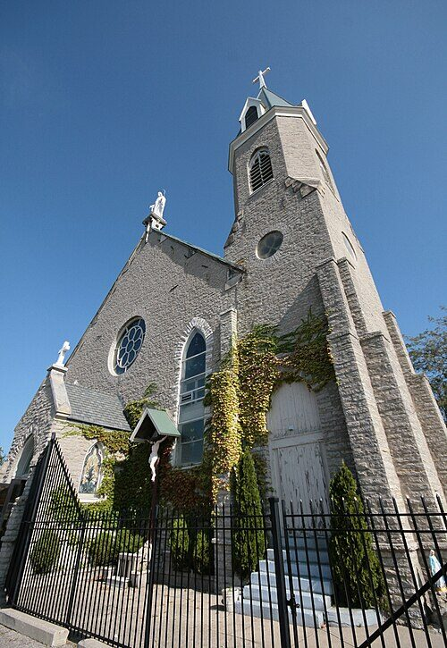

Mary Jane Williams
23 February 1918 – 1990
Quick Facts
Immediate Family
Parents
John Thomas Williams (1892–1961), truck driver in Cincinnati FAMILY ACCOUNTHelen E. Rich (about 1897–about 1967) FAMILY ACCOUNT
Spouse
William Peter Palmer (1914–2005), married 6 Aug 1938 DOCUMENTEDChildren
Judith Mae Palmer (1939–2006), b. 9 Feb 1939, Cincinnati SUPPORTED; married Homer William Brewster Jr. FAMILY ACCOUNTA daughter, b. 1940 (name kept private) FAMILY ACCOUNT
A daughter, b. 1945 (name kept private) FAMILY ACCOUNT
Siblings
- Kathleen Rita (Williams) Fitzpatrick, b. 6 Nov 1922, Mt. Adams, Cincinnati; d. 4 May 1999 SUPPORTED
- Margaret May "Margy May" (Williams) Battaglia, b. 21 Aug 1924, Covington, Kentucky; married Albert John Battaglia; d. Sept 1995 SUPPORTED
- A brother, b. 1934 (name kept private) DOCUMENTED
Social Security records name John T. Williams and Helen Rich as Kathleen's and Margaret's parents, and the Ohio Birth Index names Helen as the brother's mother. No childhood record yet places Mary Jane in their household, so her tie to them rests on family knowledge and fitting evidence. A sister "Wanda Necia," listed in an old family book, has turned up in no record at all. FamilySearch's tree lists six more children, not yet checked.
On Family Tree Sites
Life Timeline
1918 · age 0
Born (23 Feb), Cincinnati, Ohio DOCUMENTED
1922 · age 4
Sister Kathleen Rita born (6 Nov), Mt. Adams, Cincinnati SUPPORTED
1924 · age 6
Sister Margaret May born (21 Aug), Covington, Kentucky SUPPORTED
1934 · age 16
Baby brother born, Cincinnati, Ohio DOCUMENTED
1938 · age 20
Married William Peter Palmer (6 Aug) at Holy Cross Church, Mt. Adams, Cincinnati DOCUMENTED
1939 · age 20
Daughter Judith Mae born (9 Feb), Cincinnati, Ohio SUPPORTED
1940 · age 22
Census: Mary J. with William and Judith on River View Place; a second daughter born in May, Cincinnati, Ohio DOCUMENTED
1940s · age about 23–27
Husband William served in the U.S. Navy in World War II, DOCUMENTED
1945 · age 27
Third daughter born, Cincinnati area FAMILY ACCOUNT
1961 · age 43
Father John Thomas Williams died, Cincinnati FAMILY ACCOUNT
about 1967 · age about 49
Mother Helen died, UNPROVED
1990 · age about 72
Died, place not found FAMILY ACCOUNT
Life Story
Mary Jane Williams was born in Cincinnati on 23 February 1918, the eldest known child of John Thomas Williams and Helen E. Rich. Her father's grandfather, Robert Williams, born in Ireland, was working as a driver on Butler Street in Cincinnati by 1862, and her father drove a truck in the city through the 1930s and 1940s.
She grew up as the Williams family's oldest daughter. Her sister Kathleen Rita was born in 1922 on Mt. Adams, the steep hilltop neighborhood above the river, and Margaret May, called Margy May, in 1924 across the river in Covington, Kentucky. A baby brother arrived in 1934, when Mary Jane was sixteen. In the late 1930s her parents lived on Pavilion Street on Mt. Adams, near Immaculata, the "Church of the Steps."
On 6 August 1938, at twenty, Mary Jane married William Peter Palmer at Holy Cross Church on Mt. Adams, the 1895 brick church beside the Passionist monastery. Their first daughter, Judith Mae, was born the following February. In 1940 the census taker found Mary J. Palmer, twenty-two, with William and baby Judith on River View Place in Cincinnati. A second daughter was born that May.
During World War II William served in the U.S. Navy as a Seaman 1st Class. Their third daughter was born in 1945.
Mary Jane died in 1990, about seventy-two years old, after more than fifty years of marriage. Her exact date of death and her resting place have not yet been found.
More of Mary Jane's story will be added as family members share their memories.
Photo Gallery
Living family members are left out of public photos.


Sources and Evidence
- Ohio Birth Index: Mary Jane Williams, b. 23 Feb 1918, Cincinnati; mother's maiden name indexed as "Williams" DOCUMENTED
- Hamilton County marriage banns, Vol. 18, p. 60: William P. Palmer and Mary Jane Williams, Holy Cross church, Cincinnati, 6 Aug 1938 DOCUMENTED
- 1940 U.S. census, River View Place, Cincinnati (ED 91-78, family 207, roll T627-03189, p. 11B): William P. Palmer 25, wife Mary J. 22, daughter Judith 1; same place in 1935 DOCUMENTED
- Judith Mae Palmer's Social Security applications, naming her father William P. Palmer and mother Mary J. Williams: https://www.myheritage.com/research/record-10863-12716291-M/judith-mae-clark-in-us-social-security-applications-claims and https://www.myheritage.com/research/record-10863-51132743-M/judy-mae-palmer-in-us-social-security-applications-claims DOCUMENTED
- Ohio Marriages, John T. Williams and Helen E. Rich: https://www.myheritage.com/research/record-20618-1682292/john-t-williams-and-helen-e-rich-in-ohio-marriages DOCUMENTED
- Social Security Applications and Claims for Kathleen Rita (1922) and Margaret May (1924) Williams, naming Helen Rich and John T. Williams as parents DOCUMENTED
- 1940 U.S. census, John T. Williams household with wife Helen E., River View Place, Cincinnati: https://www.myheritage.com/research/record-10053-804018004/john-t-williams-in-1940-united-states-federal-census SUPPORTED
- Cincinnati city directories: John T. Williams, truck driver, 944 Pavilion (1935–38) and 6 Riverview Place (1941–51) DOCUMENTED
- Her husband William's 2005 obituary names a later wife, Dorothy, which fits Mary Jane's death before 2005 SUPPORTED
- Family account and family trees (Geni, WikiTree, WeRelate): died 1990 FAMILY ACCOUNT
Grades: DOCUMENTED an original record says it · SUPPORTED several records point to it · FAMILY ACCOUNT the family's own telling · UNPROVED a lead, not proved.
Research Notes and Open Questions
- Death: only the year 1990 is known, from the family. A Hamilton County probate death index entry, an Ohio death certificate or a 1990 Cincinnati Enquirer notice would give the date, place and burial.
- Trap: a Veterans Burials record for a Mary Jane Palmer (b. 12 Jan 1918, d. 1 Sep 1990, Garrison Forest Veterans Cemetery, Maryland, husband William K. Palmer) is a different woman. Do not use it.
- Parents: no 1920 or 1930 census or other childhood record has yet been found placing Mary Jane with John T. Williams and Helen E. Rich. Her parents' 1940 census household is still to be read; one index puts it on River View Place, the same street as Mary Jane and William that year, while the directories place it at 944 Pavilion until 1938.
- Birth: one Geni audit called her 23 Feb 1918 birth "tree-only"; the Williams research found her in the Ohio Birth Index, so the date stands. An early Ancestry entry giving "born about 1899" was a generation mix-up.
- Siblings: the old family book's sister "Wanda Necia" and a "John Thomas Jr." are not supported; the records show sisters Kathleen and Margaret and one younger brother. A possible sister "Kathleen L." in the 1940 census may be Kathleen Rita.
- No photograph of Mary Jane has been found. The portrait space shows the church where she married.
DNA
No DNA matches linked yet.